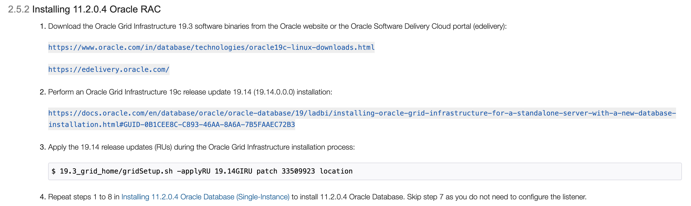

← 返回安装合集
Rocky Linux 8.9 一键安装 Oracle 11GR2（231017）单机 ASM
前言
Oracle 一键安装脚本，演示 Rocky Linux 8.9 一键安装 Oracle 11GR2 单机 ASM（231017）过程（全程无需人工干预）。（脚本包括 ORALCE PSU/OJVM 等补丁自动安装）
⭐️ 脚本下载地址：Shell脚本安装Oracle数据库
脚本第三代支持 N 节点一键安装，不限制节点数！
安装准备
- 1、安装好操作系统，建议安装图形化
- 2、配置好网络
- 3、挂载本地 ISO 镜像源
- 4、上传软件安装包（安装基础包，补丁包）
- 5、上传一键安装脚本：OracleShellInstall
在 Oracle Linux 8 （Rocky Linux 8.9）安装 11GR2 单机 ASM 数据库，需要安装 19.14 版本之后的 Grid 软件补丁，然后再安装 11GR2 数据库：

参考：
- Installing 11.2.0.4 Oracle RAC
- Oracle Clusterware (CRS/GI) - ASM - Database Version Compatibility (Doc ID 337737.1)
环境信息
📢注意：Oracle 11GR2 单机 ASM 安装主机名不能有大写字符，否则安装失败！
# 主机版本
[root@rocky8 ~]# cat /etc/os-release
NAME="Rocky Linux"
VERSION="8.9 (Green Obsidian)"
ID="rocky"
ID_LIKE="rhel centos fedora"
VERSION_ID="8.9"
PLATFORM_ID="platform:el8"
PRETTY_NAME="Rocky Linux 8.9 (Green Obsidian)"
ANSI_COLOR="0;32"
LOGO="fedora-logo-icon"
CPE_NAME="cpe:/o:rocky:rocky:8:GA"
HOME_URL="https://rockylinux.org/"
BUG_REPORT_URL="https://bugs.rockylinux.org/"
SUPPORT_END="2029-05-31"
ROCKY_SUPPORT_PRODUCT="Rocky-Linux-8"
ROCKY_SUPPORT_PRODUCT_VERSION="8.9"
REDHAT_SUPPORT_PRODUCT="Rocky Linux"
REDHAT_SUPPORT_PRODUCT_VERSION="8.9"
# 网络信息
[root@rocky8 ~]# ip a
2: ens33: <BROADCAST,MULTICAST,UP,LOWER_UP> mtu 1500 qdisc fq_codel state UP group default qlen 1000
link/ether 00:0c:29:46:1e:94 brd ff:ff:ff:ff:ff:ff
altname enp2s1
inet 192.168.6.191/24 brd 192.168.6.255 scope global noprefixroute ens33
valid_lft forever preferred_lft forever
inet6 fe80::20c:29ff:fe46:1e94/64 scope link noprefixroute
valid_lft forever preferred_lft forever
# 挂载本地 ISO 镜像
[root@rocky8 ~]# mount | grep iso9660 | grep -v "/run/media"
/dev/sr0 on /mnt type iso9660 (ro,relatime,nojoliet,check=s,map=n,blocksize=2048)
[root@rocky8 ~]# df -h|grep /mnt
/dev/sr0 13G 13G 0 100% /mnt
# starwind 共享磁盘挂载（有存储就不需要使用 starwind，直接存储上划盘挂载就可）
systemctl enable iscsid.service
iscsiadm -m discovery -t st -p 192.168.6.188
## 挂载 ASM 磁盘
iscsiadm -m node -T iqn.2008-08.com.starwindsoftware:192.168.6.188-lucifer -p 192.168.6.188 -l
## 配置开机自动挂载
iscsiadm -m node -T iqn.2008-08.com.starwindsoftware:192.168.6.188-lucifer -p 192.168.6.188 --op update -n node.startup -v automatic
[root@rocky8 ~]# lsblk
NAME MAJ:MIN RM SIZE RO TYPE MOUNTPOINT
sda 8:0 0 100G 0 disk
├─sda1 8:1 0 1G 0 part /boot
└─sda2 8:2 0 99G 0 part
├─rl-root 253:0 0 91G 0 lvm /
└─rl-swap 253:1 0 8G 0 lvm [SWAP]
sdb 8:16 0 10G 0 disk
sdc 8:32 0 50G 0 disk
sr0 11:0 1 12.8G 0 rom /mnt
# 安装包存放在 /soft 目录下
[root@rocky8 soft]# ll
-rwx------. 1 root root 2889184573 Apr 10 15:01 LINUX.X64_193000_grid_home.zip
-rwxr-xr-x. 1 root root 191401 Apr 10 14:59 OracleShellInstall
-rwx------. 1 root root 1395582860 Apr 10 09:18 p13390677_112040_Linux-x86-64_1of7.zip
-rwx------. 1 root root 1151304589 Apr 10 09:18 p13390677_112040_Linux-x86-64_2of7.zip
-rwx------. 1 root root 8684 Apr 10 09:18 p33991024_11204220118_Generic.zip
-rwx------. 1 root root 562188912 Apr 10 09:18 p35574075_112040_Linux-x86-64.zip
-rwx------. 1 root root 86183099 Apr 10 09:18 p35685663_112040_Linux-x86-64.zip
-rwx------. 1 root root 3153297056 Apr 10 15:01 p35940989_190000_Linux-x86-64.zip
-rwx------. 1 root root 128433424 Apr 10 09:18 p6880880_112000_Linux-x86-64.zip
-rwx------. 1 root root 127774864 Apr 10 15:00 p6880880_190000_Linux-x86-64.zip
-rwx------. 1 root root 321590 Apr 10 09:18 rlwrap-0.44.tar.gz
确保安装环境准备完成后，即可执行一键安装。
安装命令
使用标准生产环境安装参数（安装过程若失败，脚本支持重复执行安装）：
# 根据脚本 README 或者 -h 命令提示，编辑好一键安装命令，进入 /soft 目录执行安装：
./OracleShellInstall -n rocky8 `# hostname prefix`\
-gp oracle `# grid password`\
-op oracle `# oracle password`\
-lf ens33 `# local ip ifname`\
-dd /dev/sdc `# rac data asm disk`\
-o lucifer `# dbname`\
-ds AL32UTF8 `# database character`\
-ns AL16UTF16 `# national character`\
-redo 100 `# redo size`\
-dp oracle `# sys/system password`\
-gpa 35940989 `# grid PSU/RU`\
-opa 35574075 `# db PSU/RU`\
-jpa 35685663 `# OJVM PSU/RU`\
-opd Y `# optimize db`\
-giv 19 `# grid version`
安装过程
███████ ██ ████████ ██ ██ ██ ██ ██ ██ ██
██░░░░░██ ░██ ██░░░░░░ ░██ ░██ ░██░██ ░██ ░██ ░██
██ ░░██ ██████ ██████ █████ ░██ █████ ░██ ░██ █████ ░██ ░██░██ ███████ ██████ ██████ ██████ ░██ ░██
░██ ░██░░██░░█ ░░░░░░██ ██░░░██ ░██ ██░░░██░█████████░██████ ██░░░██ ░██ ░██░██░░██░░░██ ██░░░░ ░░░██░ ░░░░░░██ ░██ ░██
░██ ░██ ░██ ░ ███████ ░██ ░░ ░██░███████░░░░░░░░██░██░░░██░███████ ░██ ░██░██ ░██ ░██░░█████ ░██ ███████ ░██ ░██
░░██ ██ ░██ ██░░░░██ ░██ ██ ░██░██░░░░ ░██░██ ░██░██░░░░ ░██ ░██░██ ░██ ░██ ░░░░░██ ░██ ██░░░░██ ░██ ░██
░░███████ ░███ ░░████████░░█████ ███░░██████ ████████ ░██ ░██░░██████ ███ ███░██ ███ ░██ ██████ ░░██ ░░████████ ███ ███
░░░░░░░ ░░░ ░░░░░░░░ ░░░░░ ░░░ ░░░░░░ ░░░░░░░░ ░░ ░░ ░░░░░░ ░░░ ░░░ ░░ ░░░ ░░ ░░░░░░ ░░ ░░░░░░░░ ░░░ ░░░
请选择安装模式 [单机(si)/单机ASM(sa)/集群(rac)] : sa
数据库安装模式: standalone
请选择数据库版本 [11/12/19/21] : 11
数据库版本: 11
OracleShellInstall 开始安装(安装过程可查看日志：/soft/print_ora_install_20240410150924.log）
正在检查操作系统是否符合安装条件......已完成 (耗时: 0 秒)
正在去除密码复杂度配置......已完成 (耗时: 0 秒)
正在配置 YUM 源......已完成 (耗时: 1 秒)
正在获取操作系统信息......已完成 (耗时: 1 秒)
正在配置 Swap......已完成 (耗时: 0 秒)
正在配置防火墙......已完成 (耗时: 2 秒)
正在配置 selinux......已完成 (耗时: 1 秒)
正在配置 nsyctl......已完成 (耗时: 1 秒)
正在安装依赖包......已完成 (耗时: 67 秒)
正在配置主机名和 /etc/hosts......已完成 (耗时: 0 秒)
正在创建用户和组......已完成 (耗时: 3 秒)
正在创建安装目录......已完成 (耗时: 2 秒)
正在配置 Avahi-daemon 服务......已完成 (耗时: 4 秒)
正在配置透明大页 && NUMA && 磁盘 IO 调度器......已完成 (耗时: 1 秒)
正在配置操作系统参数 sysctl......已完成 (耗时: 1 秒)
正在配置 RemoveIPC......已完成 (耗时: 1 秒)
正在配置用户限制 limit......已完成 (耗时: 1 秒)
正在配置 shm 目录......已完成 (耗时: 1 秒)
正在安装 rlwrap 插件......已完成 (耗时: 10 秒)
正在配置用户环境变量......已完成 (耗时: 1 秒)
正在解压 Grid 安装包以及补丁......已完成 (耗时: 189 秒)
正在解压 Oracle 安装包以及补丁......已完成 (耗时: 93 秒)
正在安装 Grid 软件以及补丁......已完成 (耗时: 1402 秒)
正在安装 Oracle 软件以及补丁......已完成 (耗时: 982 秒)
正在创建数据库......已完成 (耗时: 825 秒)
正在优化数据库......已完成 (耗时: 21 秒)
恭喜！Oracle 单机 ASM 安装成功 (耗时: 3616 秒)，现在是否重启主机：[Y/N] Y
正在重启主机......
连接测试
查看系统版本：
[root@rocky8:/root]$ cat /etc/os-release
NAME="Rocky Linux"
VERSION="8.9 (Green Obsidian)"
ID="rocky"
ID_LIKE="rhel centos fedora"
VERSION_ID="8.9"
PLATFORM_ID="platform:el8"
PRETTY_NAME="Rocky Linux 8.9 (Green Obsidian)"
ANSI_COLOR="0;32"
LOGO="fedora-logo-icon"
CPE_NAME="cpe:/o:rocky:rocky:8:GA"
HOME_URL="https://rockylinux.org/"
BUG_REPORT_URL="https://bugs.rockylinux.org/"
SUPPORT_END="2029-05-31"
ROCKY_SUPPORT_PRODUCT="Rocky-Linux-8"
ROCKY_SUPPORT_PRODUCT_VERSION="8.9"
REDHAT_SUPPORT_PRODUCT="Rocky Linux"
REDHAT_SUPPORT_PRODUCT_VERSION="8.9"
查看 Grid 版本以及补丁：
[grid@rocky8:/home/grid]$ sqlplus -v SQL*Plus: Release 19.0.0.0.0 - Production Version 19.22.0.0.0 [grid@rocky8:/home/grid]$ opatch lspatches 36115038;TOMCAT RELEASE UPDATE 19.0.0.0.0 (36115038) 35967489;OCW RELEASE UPDATE 19.22.0.0.0 (35967489) 35956421;ACFS RELEASE UPDATE 19.22.0.0.0 (35956421) 35943157;Database Release Update : 19.22.0.0.240116 (35943157) 33575402;DBWLM RELEASE UPDATE 19.0.0.0.0 (33575402) OPatch succeeded.
查看集群：
[grid@rocky8:/home/grid]$ crsctl stat res -t
--------------------------------------------------------------------------------
Name Target State Server State details
--------------------------------------------------------------------------------
Local Resources
--------------------------------------------------------------------------------
ora.DATA.dg
ONLINE ONLINE rocky8 STABLE
ora.LISTENER.lsnr
ONLINE ONLINE rocky8 STABLE
ora.asm
ONLINE ONLINE rocky8 Started,STABLE
ora.ons
OFFLINE OFFLINE rocky8 STABLE
--------------------------------------------------------------------------------
Cluster Resources
--------------------------------------------------------------------------------
ora.cssd
1 ONLINE ONLINE rocky8 STABLE
ora.diskmon
1 OFFLINE OFFLINE STABLE
ora.evmd
1 ONLINE ONLINE rocky8 STABLE
ora.lucifer.db
1 ONLINE ONLINE rocky8 Open,HOME=/u01/app/o
racle/product/11.2.0
/db,STABLE
--------------------------------------------------------------------------------
查看 Oracle 版本以及补丁：
[oracle@rocky8:/home/oracle]$ sqlplus -v SQL*Plus: Release 11.2.0.4.0 Production [oracle@rocky8:/home/oracle]$ opatch lspatches 35685663;OJVM PATCH SET UPDATE 11.2.0.4.231017 33991024;11204CERT ON OL8: LINKING ERRORS DURING 11204 FOR DB INSTALL ON OL8.2 35574075;Database Patch Set Update : 11.2.0.4.231017 (35574075) OPatch succeeded.
连接数据库：
[oracle@rocky8:/home/oracle]$ sas SQL*Plus: Release 11.2.0.4.0 Production on Wed Apr 10 16:24:58 2024 Copyright (c) 1982, 2013, Oracle. All rights reserved. Connected to: Oracle Database 11g Enterprise Edition Release 11.2.0.4.0 - 64bit Production With the Partitioning, Automatic Storage Management, OLAP, Data Mining and Real Application Testing options sys@LUCIFER 2024-04-10 16:24:59> show parameter name NAME TYPE VALUE ------------------------------------ ----------- ------------------------------ cell_offloadgroup_name string db_file_name_convert string db_name string lucifer db_unique_name string lucifer global_names boolean FALSE instance_name string lucifer lock_name_space string log_file_name_convert string processor_group_name string service_names string lucifer
数据库连接正常。